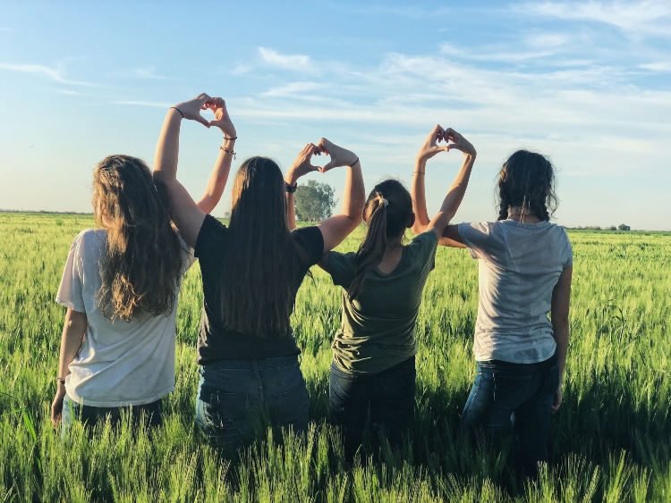

.png)

Mehaba ben Meryem.2005 yılında İstanbul'da doğdum. İlkokulu ve ortaokulu mahallemdeki okula gittim.Liseyi Kadıköy İmam Hatip lisesinde yatılı okudum.Ardından üniversite için Sakarya'ya geldim.
Küçüklüğümde ileri derecede yüzme eğitimi aldım. Uzun yıllar aktif bir şekilde havuzlarda eğitmen eşliğinde yüzdüm. Yüzmek benim için bir tutku.Günümüzde havuzların hijyenine güvenmediğim için yazları denizlerde yüzmeyi tercih ediyorum.Denizde çok uzun mesafede açılıp özgürlük hissini hissetmeyi çok seviyorum.
Müzik dinlemek benim için vazgeçilmez bir olay. Moduma göre müzik seçmeye bayılıyorum.Müzik listelerim var ruh halime göre, yapacağım işe göre , gideceğim yere göre müzik listemi seçiyorum. Özellikle manzaraya karşı müzik dinlemeye bayılıyorum.Ufak bir sorunu var yüksek sesli müzik dinlediğim zaman dışarıdan gelen sesleri duymuyorum. Ailem bu konuda biraz şikayetçi.
İstanbul'da yaşıyorum ve lisede yurtta kaldım .Liseden çok çok yakın arkadaşlarım var. Onlarla görüşmeyi, vakit geçirmeyi çok seviyorum ve özlüyorum.Evim buraya yakın olduğu için neredeyse her haftasonu eve gidiyorum. Arkadaşlarımla vakit geçirip geri dönüyorum.